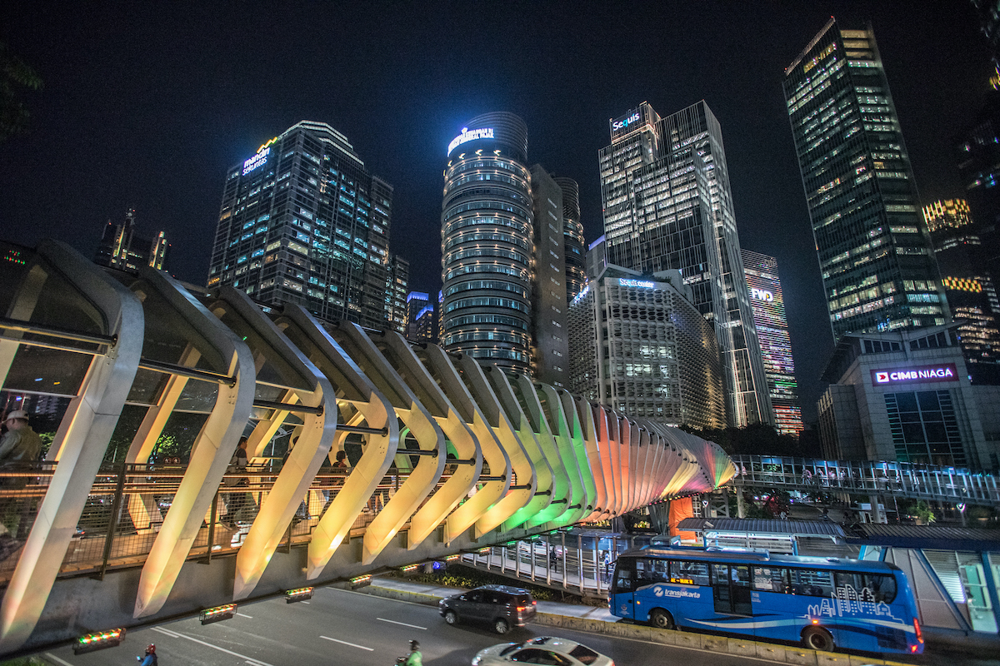

The economy of Jakarta is the largest in Indonesia, contributing 17% to the national GDP as of 2020. It is dominated by the service sector, which accounts for over 70% of the city's GDP. Many of Indonesia's largest companies such as Bank Central Asia, Bank Rakyat Indonesia, and Astra International are headquartered in Jakarta and the city is also home to the Indonesia Stock Exchange.
Jakarta has some of the highest concentration of shopping malls in the world, with around 170 malls within its borders as of 2020. Some of the largest and most popular malls include Grand Indonesia, Plaza Indonesia, and Pacific Place. These malls offer a wide range of shopping, dining, and entertainment options, and are popular destinations for people during the weekends and holidays.